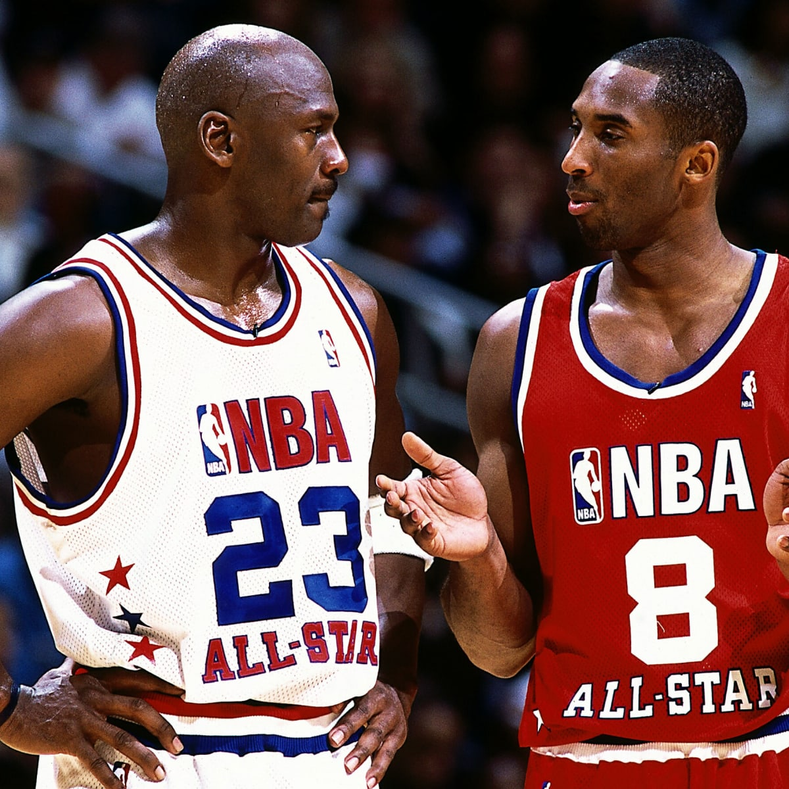
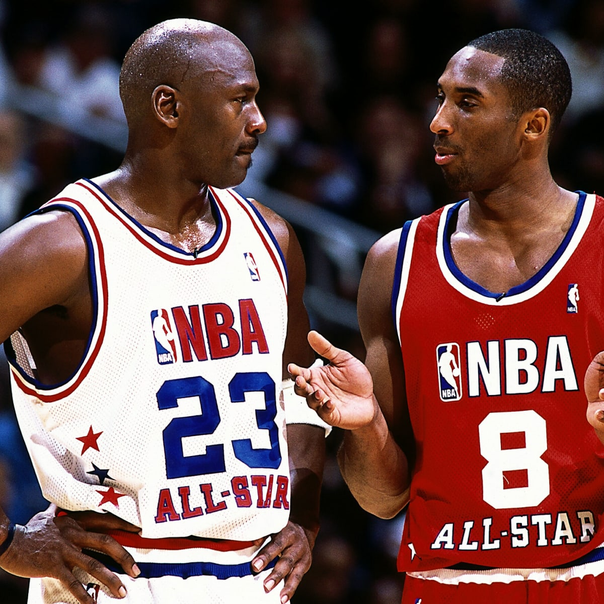

Michael Jordan
The Greatest Of All Time
 


Michael Jeffrey Jordan (born February 17, 1963), also known by his initials MJ,is an American businessman and former professional basketball player. His biography on the official NBA website states: "By acclamation, Michael Jordan is the greatest basketball player of all time." He played fifteen seasons in the National Basketball Association (NBA), winning six NBA championships with the Chicago Bulls. Jordan is the principal owner and chairman of the Charlotte Hornets of the NBA and of 23XI Racing in the NASCAR Cup Series. He was integral in popularizing the NBA around the world in the 1980s and 1990s,becoming a global cultural icon in the process.
Jordan played college basketball for three seasons under coach Dean Smith with the North Carolina Tar Heels. As a freshman, he was a member of the Tar Heels' national championship team in 1982. Jordan joined the Bulls in 1984 as the third overall draft pick,and quickly emerged as a league star, entertaining crowds with his prolific scoring while gaining a reputation as one of the game's best defensive players.His leaping ability, demonstrated by performing slam dunks from the free-throw line in Slam Dunk Contests, earned him the nicknames "Air Jordan" and "His Airness". Jordan won his first NBA title with the Bulls in 1991, and followed that achievement with titles in 1992 and 1993, securing a three-peat. Jordan abruptly retired from basketball before the 1993–94 NBA season to play Minor League Baseball but returned to the Bulls in March 1995 and led them to three more championships in 1996, 1997, and 1998, as well as a then-record 72 regular season wins in the 1995–96 NBA season.He retired for the second time in January 1999 but returned for two more NBA seasons from 2001 to 2003 as a member of the Washington Wizards.During the course of his professional career he was also selected to play for the United States national team, winning four gold medals (at the 1983 Pan American Games, 1984 Summer Olympics, 1992 Tournament of the Americas and 1992 Summer Olympics), while also being undefeated.
Jordan's individual accolades and accomplishments include six NBA Finals Most Valuable Player (MVP) awards, ten NBA scoring titles (both all-time records), five NBA MVP awards, ten All-NBA First Team designations, nine All-Defensive First Team honors, fourteen NBA All-Star Game selections, three NBA All-Star Game MVP awards, three NBA steals titles, and the 1988 NBA Defensive Player of the Year Award.He holds the NBA records for career regular season scoring average (30.12 points per game) and career playoff scoring average (33.45 points per game). In 1999, he was named the 20th century's greatest North American athlete by ESPN, and was second to Babe Ruth on the Associated Press' list of athletes of the century.Jordan was twice inducted into the Naismith Memorial Basketball Hall of Fame, once in 2009 for his individual career,and again in 2010 as part of the 1992 United States men's Olympic basketball team ("The Dream Team").He became a member of the United States Olympic Hall of Fame in 2009,a member of the North Carolina Sports Hall of Fame in 2010,and an individual member of the FIBA Hall of Fame in 2015 and a "Dream Team" member in 2017.In 2021, Jordan was named to the NBA 75th Anniversary Team.
One of the most effectively marketed athletes of his generation,Jordan is known for his product endorsements.He fueled the success of Nike's Air Jordan sneakers, which were introduced in 1984 and remain popular today. Jordan also starred as himself in the 1996 live-action animation hybrid film Space Jam and is the central focus of the Emmy Award-winning documentary miniseries The Last Dance (2020). He became part-owner and head of basketball operations for the Charlotte Bobcats (now named the Hornets) in 2006,and bought a controlling interest in 2010. In 2016, Jordan became the first billionaire player in NBA history.Also in 2016, President Barack Obama awarded him the Presidential Medal of Freedom. As of 2022, Jordan's net worth is estimated at $1.7 billion.